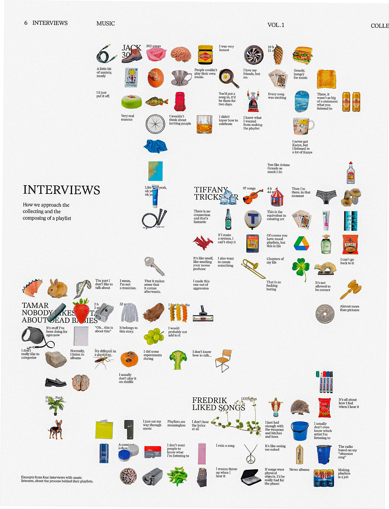

Collecting Music

Playlists, piracy, algorithms.
Collecting is a magazine about collecting. In Volume 1,
Music, we explore the ways people collect music.
Creating a playlist is choosing music, perhaps finding, combining it or remembering. Often, it's placing songs in contexts they weren’t intended to be in: the inevitable result of the shuffle buttons,
Printed tabloid Maga
z
ine
Website
Collecting is a magazine about collecting. in Volume 1, Music and
In collaboration with Solvej Jansson and Elvin Odelholm